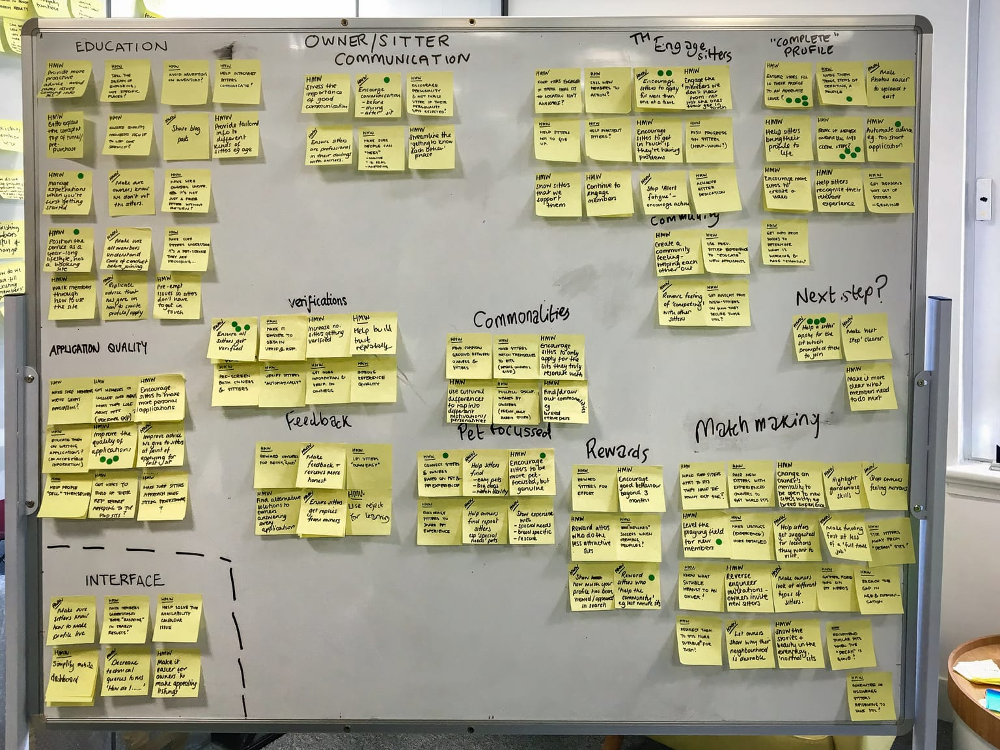
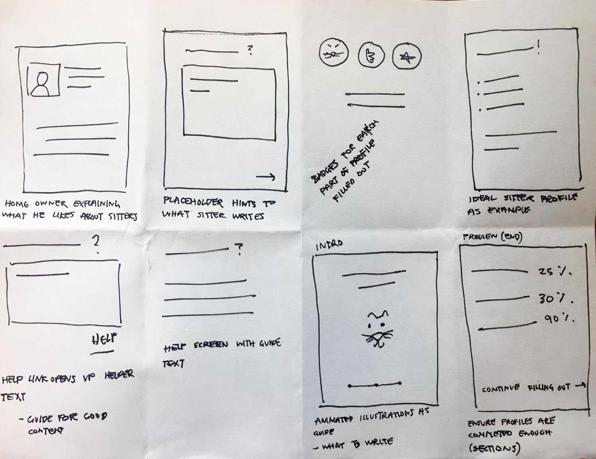
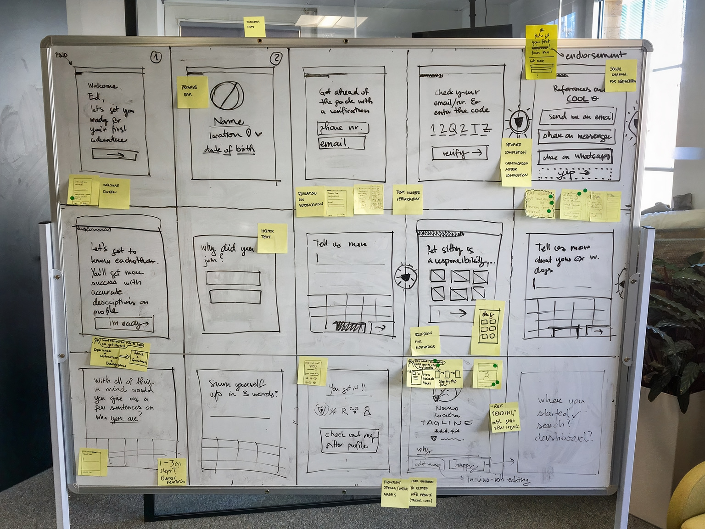
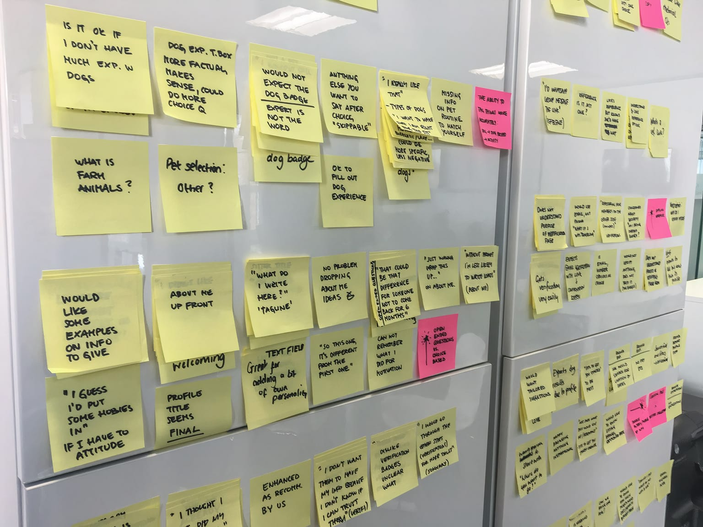

Problem
Around 30% of new sitters weren't securing a house sit in their first three months. That early drop-off was causing:
- A sharp rise in refund requests
- Low trust in the platform
- A growing load for our support team
Goal
Help sitters succeed early by building strong, trustworthy profiles so they could get picked, complete sits, and stay on the platform.
Process
We kicked off with a 5-day design sprint to understand the blockers and move fast on a testable solution.
Mon
Map
Make a map of the problem and choose a target to focus on for the week.
Tue
Sketch
Sketch competing solutions, with everyone working up their own ideas independently.
Wed
Decide
Decide on the best solution and turn it into a testable plan.
Thu
Prototype
Build a realistic prototype that's just real enough to test.
Fri
Test
Test with target customers and learn what works before building for real.
Day 1: Understand
We mapped the sitter journey and clustered the opportunities we found. The key user research insight: new sitters weren't adding enough quality detail to their profiles to appeal to homeowners. This surfaced three opportunities:
- How might we ensure sitters complete their profiles to a strong standard?
- How might we get sitters verified?
- How might we break onboarding into clear, manageable steps?

Day 2: Ideate
To spark ideas, I ran an inspiration exercise where each member showcased a favourite product while others sketched. We explored ways to guide and motivate sitters with progress indicators, tips, and examples focusing on showing what a "good" profile looks like.

Day 3: Decide
We strung the winning sketches into a storyboard around five key moments, a welcome screen leading into verification, personal information, pet preferences, and a profile preview, which informed both the prototype and the user-interview script.

Day 4: Prototyping
Drawing on our design system and pattern library, I quickly turned the storyboard into an interactive prototype covering the five key moments, ready to put in front of sitters for testing.
Day 5: Testing with users
New sitters found the checklist super helpful. They felt clearer on what to do, why it mattered, and were more motivated to finish their profiles.
"I didn't realise I was missing so much, but now I feel like I know how to stand out." Testing participant

Impact
Improved quality of sitter profiles led to more secured sits and reduced churn
+18%
sitters securing their first sit within 3 months
−11%
early churn & refund requests
72%
upload 4+ photos (up from 46%)
65%
write trust-building bios (up from 38%)
Learnings
Completion drives success
Sitters who completed more of their profile were 3× more likely to get their first sit.
Clarity was key
The biggest blockers were clarity and confidence. People didn't know what was expected.
Early nudges add up
Nudging the right behaviours early (photos, a warm, detailed bio) had large impact.
Outcome
We continued to iterate the designs based on the observed patterns and validated new ideas using remote user testing. Results have been very positive with users so far as we have ironed out most issues highlighted form the sprint testing phase.